History of the Marching 97
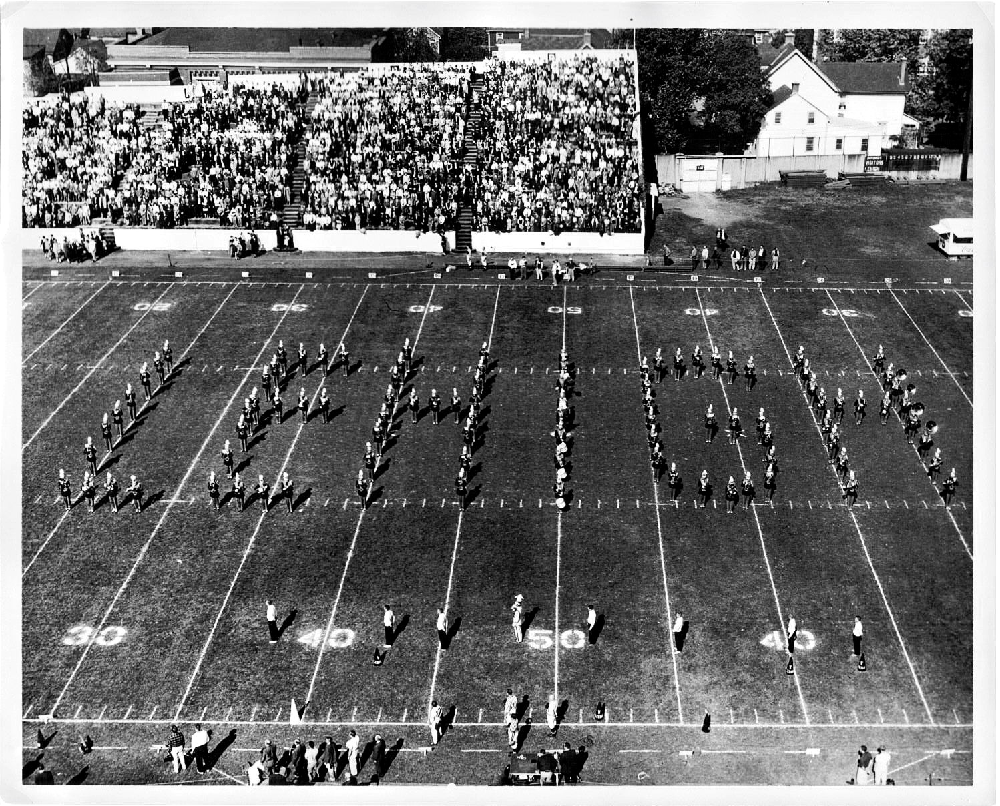
The Marching 97 has been a part of Lehigh University for over a century; 1906 marks the start of a remarkable and singular history. In
its prime, the band was regarded as among the finest in the world, and performed both field shows and stage concerts across the country.
Auditions used to be held at the beginning of each academic year, and was quite a competitive organization! Over the years, one thing
remained constant throughout the band's existence: sociable, fun-loving, rowdy enthusiasm — a type of spirit the band calls "psyche".
While the members and directors may change, the spirit of the band remains the same as it was when the band first assembled in 1906.
Perhaps nobody has better described the Lehigh Band than one of its founders, E.E. Ross: "There was never a single case of jealousy or
friction...we worked with little formal system but with complete cooperation - and we had a lot of fun."
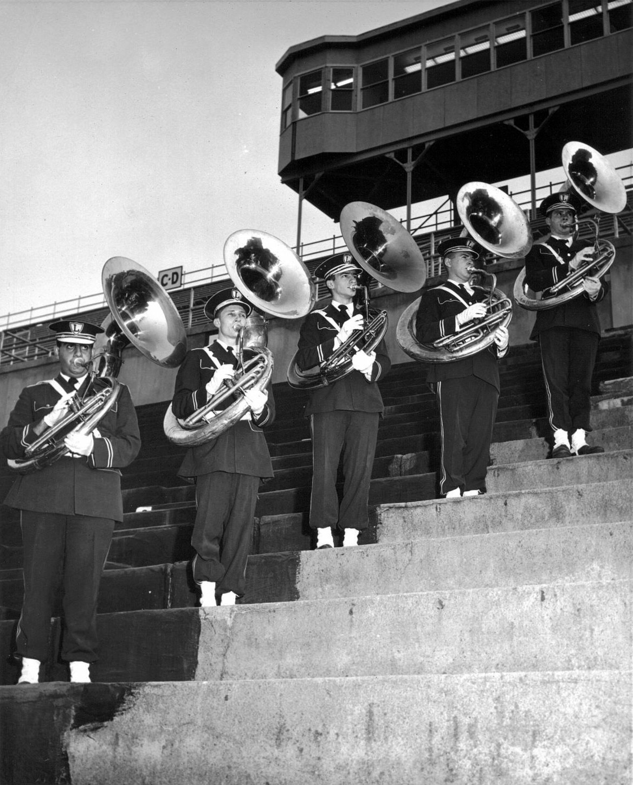
Did you know?
After an away football game against Harvard, a Harvard newspaper declared the Marching 97 the "Finest Band East of All Points West", which has stuck ever since!
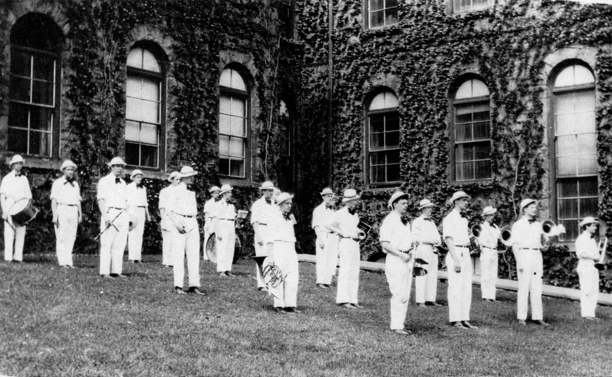
A fan-favorite tradition!
A tradition known as "EcoFlame" occurs every Friday morning before the exhilarating Lehigh-Lafayette game. It began in the 1970s, when Professor Rich Aaronson asked the band to play for his ECO 001 class. The Marching 97 interrupts classes to play fight songs and bring psyche to the students before the big rivalry game!
Timeline
1906: The first Lehigh University band is founded under the direction of E. E. Ross '08, with the goal of increasing school spirit. Approximately 15 men meet for the first time in Saucon (now Christmas-Saucon) Hall.
1907: The band makes their first appearance at a football game.
1908: The band performs for Andrew Carnegie, who arrives on campus for "Carnegie Day", to celebrate the construction of Taylor Hall (funded by the Carnegie Foundation). The first concert performance of the Lehigh Band is also held in the newly-built Drown Hall.
1923: The L.U. Band performs their first recorded halftime show, forming a "human L".
1948: The 97-member marching system is adopted under the direction of LTC William T. Schempf.
1963: The band performs a concert in Carnegie Hall with the Columbia University band.
1964: The band plays at the 1964 New York World's Fair.
1965: The Brown and White (Lehigh's school newspaper) refers to the band as "the Marching 97" for the first time.
1969: The 97 allows women from nearby universities to join the band as cheerleaders. The band also returns to Carnegie Hall, this time with the Yale University band.
1971: Lehigh University first admits women. The band travels to the Lehigh-Delaware football game by train, serenading onlookers with renditions of "The 1812 Overture".
1973: The first women join the Marching 97, removing their shakos to reveal their long hair after a field show set to “There's Nothing Like a Dame”. Lehigh also hosts the non-competitive Globe-Times Band Festival at Taylor Stadium.
1977: The band travels to the Pioneer Bowl with the football team and makes their first appearance on national TV. Lehigh beats Jacksonville State 33-0.
1987: The Marching 97 marches its final season in the venerated Taylor Stadium. The band currently performs at home football games in Goodman Stadium.
2014: The band performs at Yankee Stadium for the 150th meeting of the Lehigh-Lafayette football game.
2018: The 97 makes its first trip overseas to perform in the London New Year's Day Parade in England.
2024: The Marching 97 goes to Disney World Imagination Campus and performs for Orlando.
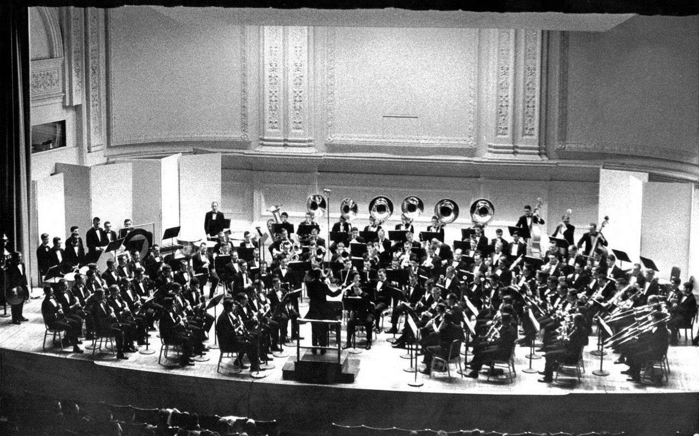
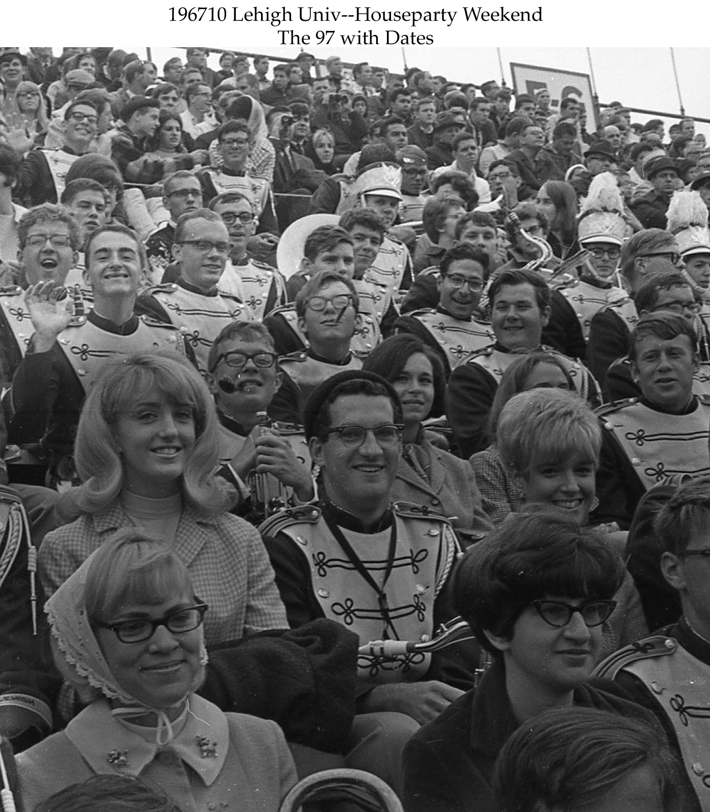
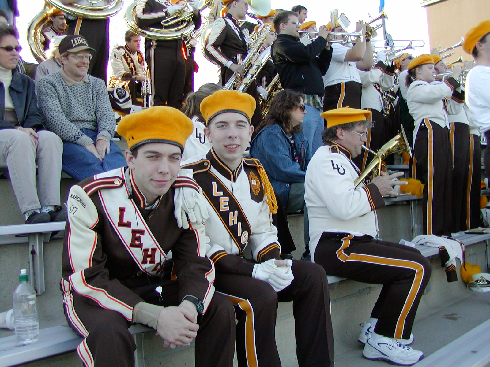
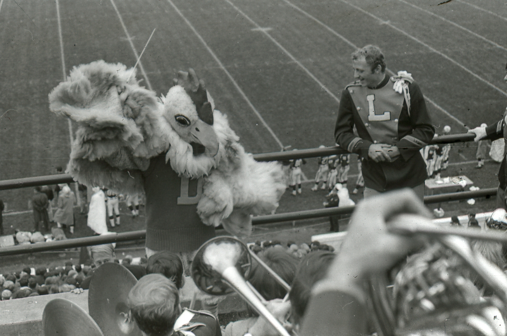
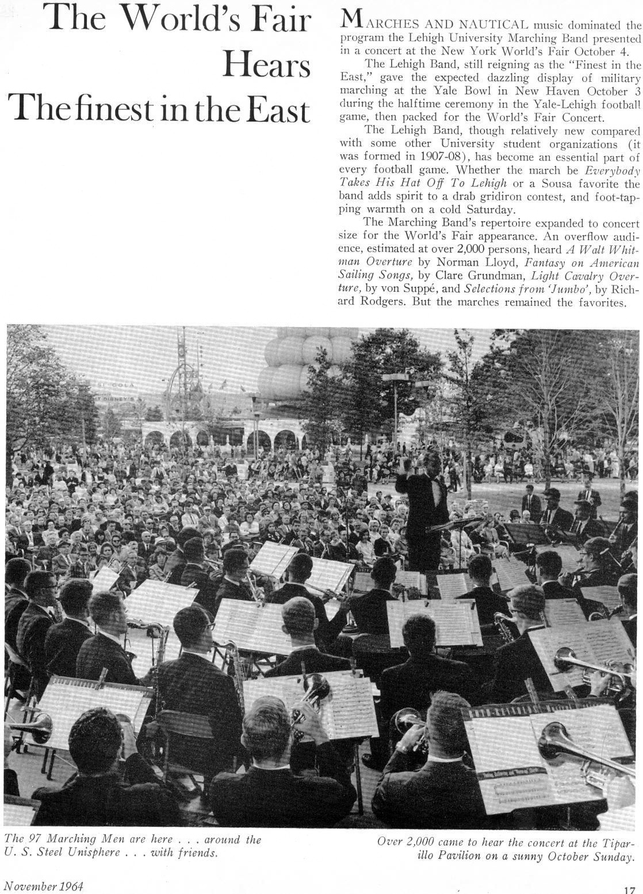
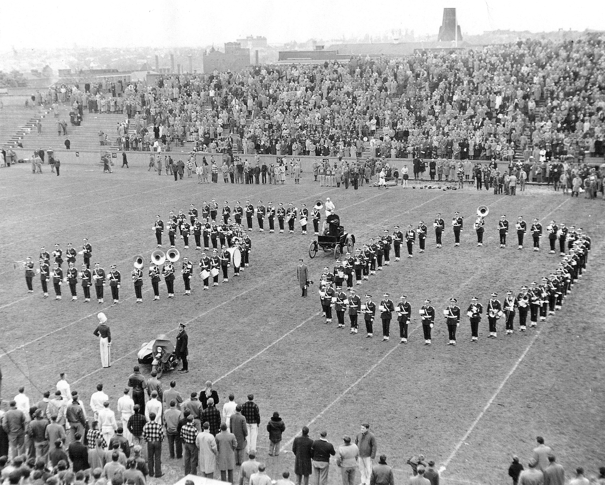
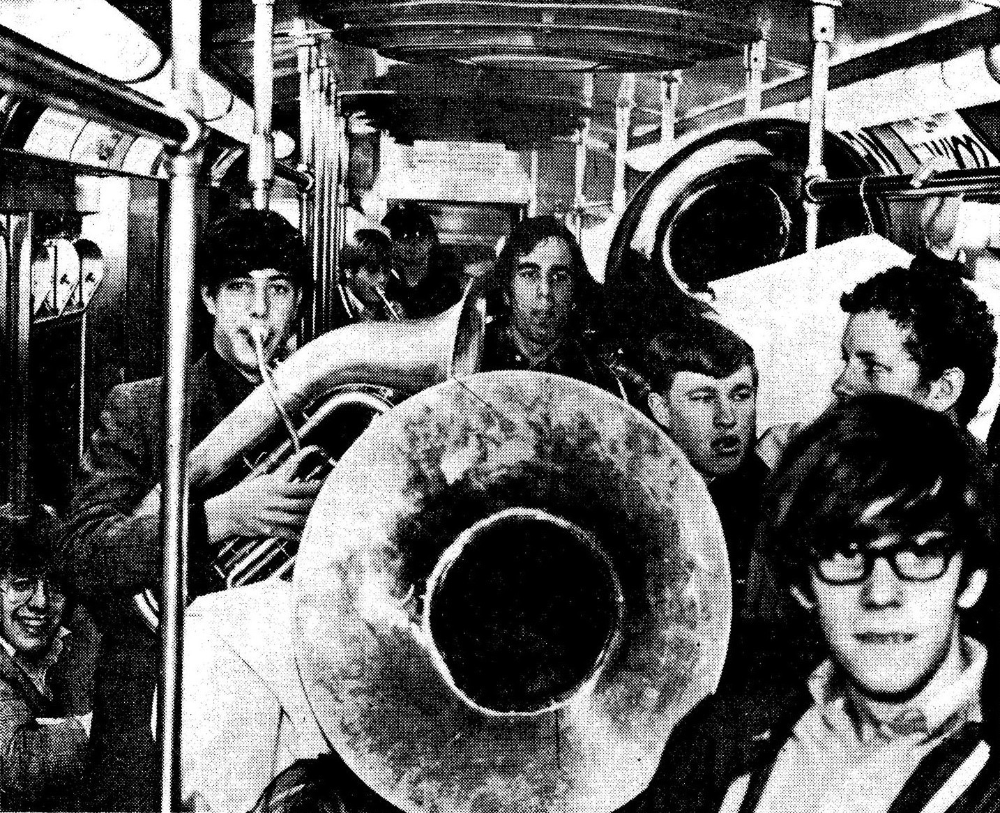
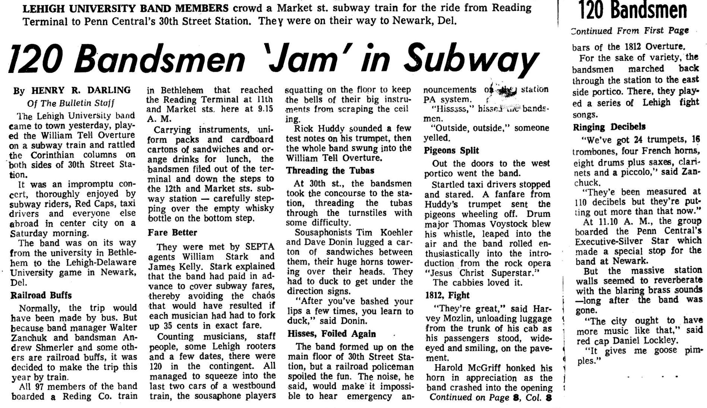
Text description of the above article
The article is titled "120 Bandsmen 'Jam' in Subway", and was written by Henry R. Darling. It starts, "The Lehigh University band came to town yesterday, played the William Tell Overture on a subway train and rattled the Corinthian columns on both sides of 30th Street Station. It was an impromptu concert, thoroughly enjoyed by subway riders, Red Caps, taxi drivers, and everyone else abroad in center city on a Saturday morning. The band was on its way from the university in Bethlehem to the Lehigh-Delaware University game in Newark, Del."
The next section, "Railroad Buffs", expresses, "Normally, the trip would have been made by bus. But because band manager Walter Zanchuk and bandsman Andrew Shmerler and some others are railroad buffs, it was decided to make the trip this year by train. All 97 members of the band boarded a Reding Co. train in Bethlehem that reached the Reading Terminal at 11th and Market sts. here at 9.15 A. M. Carrying instruments, uniform packs and cardboard cartons of sandwiches and orange drinks for lunch, the bandsmen filed out of the terminal and down the steps to the 12th and Markets sts. subway station - carefully stepping over the empty whisky bottle on the bottom step."
The following section, "Fare Better", recounts, "They were met by SEPTA agents William Stark and James Kelly. Stark explained that the band had paid in advance to cover subway fares, thereby avoiding the chaos that would have resulted if each musician had had to fork up 35 cents in exact fare. Counting musicians, staff people, some Lehigh rooters and a few dates, there were 120 in the contigent. All managed to squeeze into the last two cars of a westbound train, the sousaphone players squatting on the floor to keep the bells of their big instruments from scraping the ceiling. Rick Huddy sounded a few test notes on his trumpet, then the whole band swung into the William Tell Overture."
The next section, "Threading the Tubas", describes, "At 30th st., the bandsmen took the concourse to the station, threating the tubas through the turnstiles with some difficulty. Sousaphonists Tim Koehler and Dave Donin lugged a carton of sandwiches between them, their huge horns towering over their heads. They had to duck to get under the direction signs. 'After you've bashed your lips a few times, you learn to duck,' said Donin."
The following section, "Hisses, Foiled Again", states, "The band formed up on the main floor of 30th Street Station, but a railroad policeman spoiled the fun. The noise, he said, would make it impossible to hear emergency announcements on the station PA system. 'Hisssss,' hissed the bandsmen. 'Outside, outside,' someone yelled."
The next section, "Pigeons Split", recalls, "Out the doors to the west portico went the band. Startled taxi drivers stopped and stared." A fanfare from Huddy's trumpet sent the pigeons wheeling off. Drum major Thomas Voystock blew his whistle, leaped into the air and the band rolled enthusiastically into the introduction from the rock opera 'Jesus Christ Superstar.' The cabbies loved it.
The following section, "1812, Fight", says, "'They're great,' said Harvey Mozlin, unloading luggage from the trunk of his cab as his passengers stood, wide-eyed and smiling, on the pavement. Harold McGriff honked his horn in appreciation as the band crashed into the opening bars of the 1812 Overture. For the sake of variety, the bandsmen marched back through the station to the east side portico. There, they played a series of Lehigh fight songs."
The last section, "Ringing Decibels", states, "'We've got 24 trumpets, 16 trombones, four French horns, eight drums plus saxes, clarinets, and a piccolo,' said Zanchuck. 'They've been measured at 110 decibels but they're putting out more than that now.' At 11.10 A. M., the group boarded the Penn Central's Executive-Silver Star which made a special stop for the band at Newark. But the massive station walls seemed to reverberate with the blaring brass sounds - long after the band was gone. 'The city ought to have more music like that,' said red cap Daniel Lockley. 'It gives me goose pimples.'"